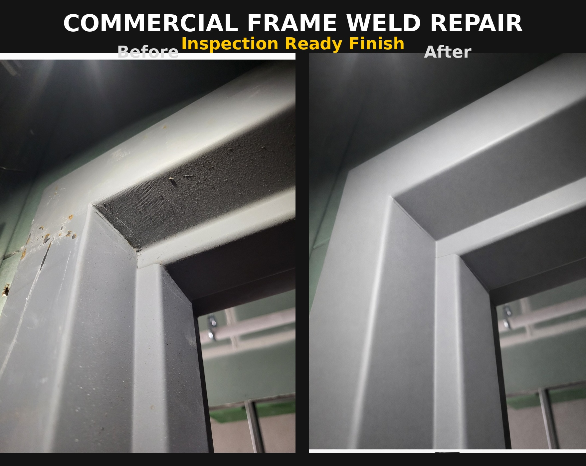
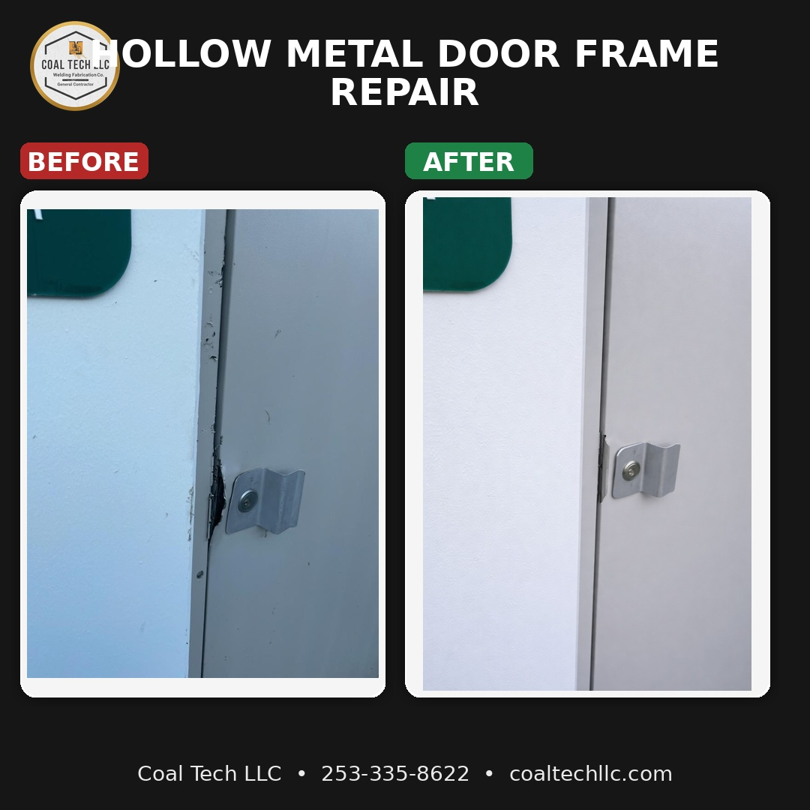
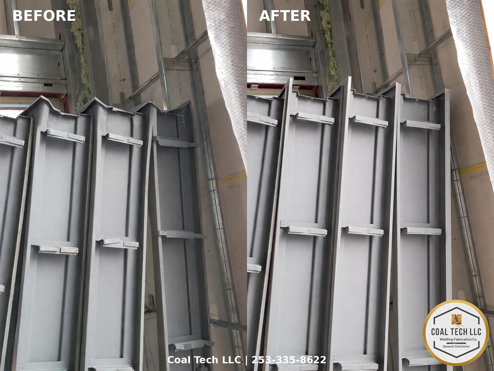
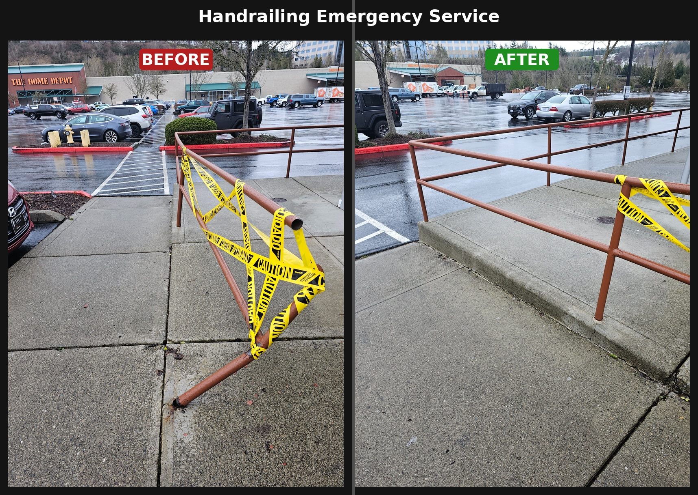
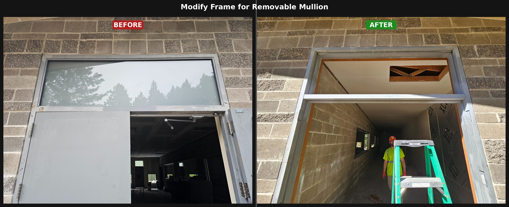
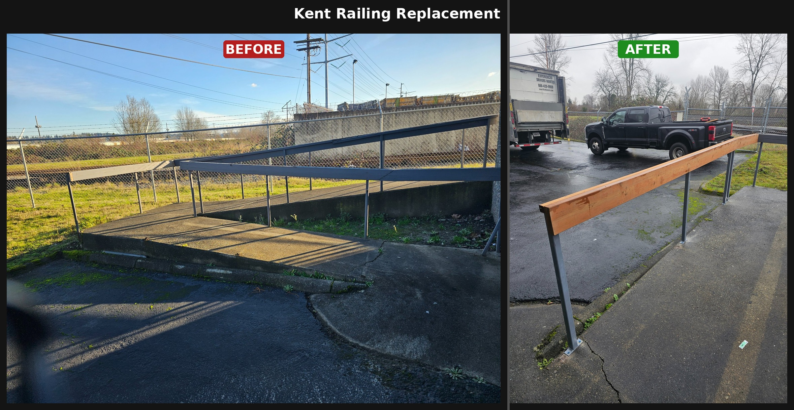
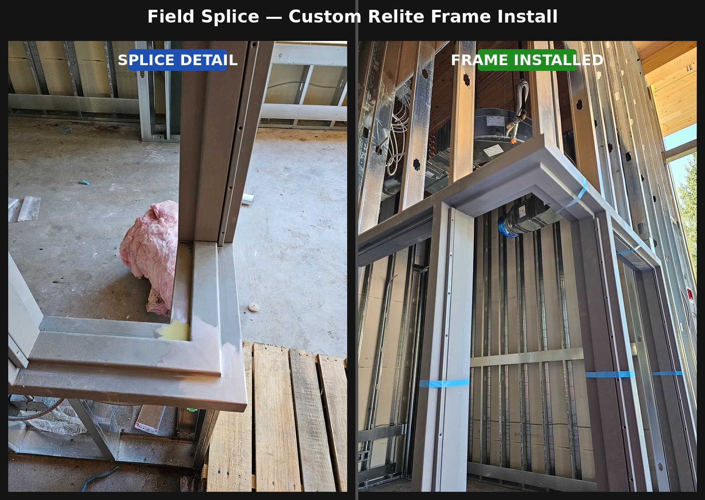
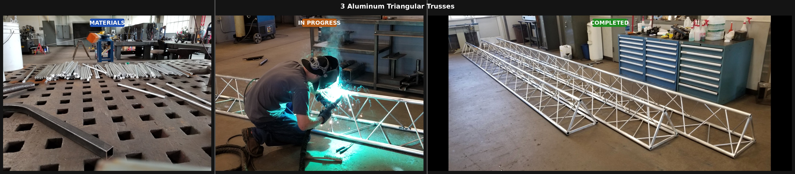
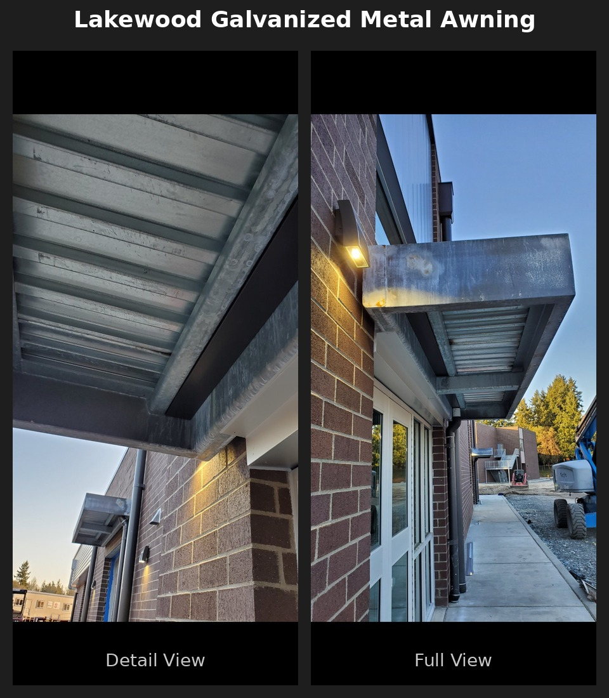

Commercial Mobile Welding & Emergency Repair
Washington State's Specialist for Commercial On-Site & Emergency Welding
Licensed • Bonded • Insured • Same-Day Response Available
📞 Call or Text 253-335-8622Washington State's Specialist for Commercial On-Site & Emergency Welding
Licensed • Bonded • Insured • Same-Day Response Available
📞 Call or Text 253-335-8622We specialize exclusively in commercial and industrial welding. Property managers, general contractors, and facility teams count on us for fast, professional results across Washington State.
24/7 same-day dispatch for commercial emergencies — break-ins, structural failures, equipment breakdowns.
Fabrication, repair, and replacement for commercial openings including fire-rated and security doors.
We come to your job site. Fully equipped mobile welding rigs serving all of Washington State.
Structural steel, custom fabrication, and equipment repair for commercial and industrial clients.
All major welding processes — aluminum, stainless, and carbon steel.
Experienced on government, military, and high-security sites throughout Washington.
Available for GC project segments and emergency support. Reliable, credentialed trade partner.
On-site refreshers and upskilling for commercial welding teams.
We've repaired 40+ door frames on single commercial job sites. Damaged, bent, broken-in, or fire-rated replacement — this is our specialty.
Serving property managers, GCs, and facility teams throughout Washington State
View Door & Frame Services Call 253-335-8622Commercial break-ins, structural failures, equipment breakdowns — our team responds when it counts. Clients have called us at 1AM and had their doors secured by morning.
Same-day response available · Commercial & industrial only
Emergency Welding Services Call Now — 253-335-8622Mobile welding units serving all of Washington State. Click your city for local welding details.
View all Washington service areas → · Don't see your city? Contact us — we travel statewide.
We've dispatched at 1AM to secure broken-in doors and responded same-day to structural failures. When it counts, we show up.
Very few welders specialize here. We've repaired 40+ frames on a single job site. Property managers and GCs call us specifically for door and frame work.
We don't do residential. 100% commercial and industrial — which means you get a welder who understands your site, your schedule, and your standards.
Full credentials maintained. We meet all Washington State contractor requirements and carry the documentation your GC or facility manager needs.
Strict jobsite safety protocols. We coordinate with your safety team, follow site-specific requirements, and leave your site clean.
Fully equipped mobile welding rigs travel throughout Washington. We come to your job site, whether it's Federal Way or Spokane.
We coordinate directly with PMs, facility managers, and GCs — and we actually answer our phones.
Trusted trade partner for GCs needing reliable welding support on project segments, emergency backup, or long-term subcontracting.
Ready to work with Washington's commercial welding specialists?
Request a Service Quote Call 253-335-8622Verified reviews from contractors, property managers, and facility teams across Washington State.
Feb 2026
"Coal tech fixed more than 40 door frames for us on a large commercial job site. Justin and his team did a fantastic job. They take pride in their work, they take safety seriously, they were excellent trade partners all around."
Apr 2026
"We had a break in and they came out and repaired the hollow metal door frame on site the same night so we could feel safe! Will for sure use them again!!"
Feb 2026
"Called these guys out at 1am for an emergency job to repair my metal door and frame after getting broken into. Great company to use especially in an emergency situation. I give 5 stars."
Feb 2026
"Justin and his welding business are top tier. From start to finish he was professional, reliable, and extremely skilled at what he does. The weld quality is clean, strong, and built to last. He communicates clearly, shows up when he says he will, and takes pride in his work."
Commercial and industrial clients only — no residential.
On-site repair and fabrication across Washington State — real commercial jobs, real results.

BEFORE → AFTERCorroded and damaged door frame corner welded and finished to inspection-ready standard. Seattle, WA.

BEFORE → AFTERFrame gap and damage repaired on-site — clean, paint-ready finish. Coal Tech LLC.

BEFORE → AFTERHollow metal frames damaged in shipping — repaired on-site, avoiding costly full replacement.

BEFORE → AFTERCollapsed commercial handrail — caution tape to code-compliant, same day. Issaquah, WA.

BEFORE → AFTERHollow metal frame modified in the field to accept a removable mullion. Washington State.

BEFORE → AFTERDeteriorated steel railing removed and replaced with new fabricated railing. Kent, WA.

SPLICE DETAIL → INSTALLEDCustom hollow metal relite frame fabricated and field-spliced into a commercial opening.

MATERIALS → COMPLETED3 aluminum triangular trusses fabricated from raw stock to completion. Washington State.

DETAIL · FULL VIEWCustom fabricated galvanized metal awning installed on commercial building. Lakewood, WA.
Do you offer 24/7 emergency welding?
Yes. Round-the-clock emergency mobile welding for commercial and industrial clients throughout Washington State. Call 253-335-8622 any time.
Do you specialize in hollow metal door and frame repair?
Yes — it's one of our flagship services. We've repaired 40+ door frames on a single commercial job site and work regularly with property managers and GCs on fire-rated and commercial security door openings.
Do you provide on-site welding?
Yes. Nearly all our work is performed on-site throughout Washington State via fully equipped mobile welding units.
Can you work on military bases or secure facilities?
Yes. Coal Tech LLC has experience on secure, restricted-access, and military sites in Washington. We comply with site protocols and coordinate directly with your project management team.
Are you open to subcontracting?
Yes. We're a reliable trade partner for GCs needing welding support on project segments, emergency backup, or commercial subcontracting relationships.
Are you licensed, bonded, and insured?
Yes. Fully licensed, bonded, and insured in Washington State. Documentation available upon request.